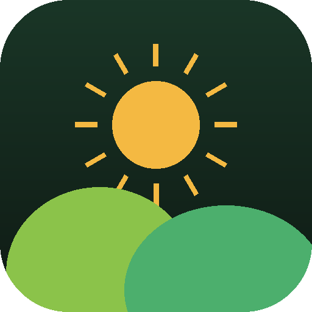

Off-Grid
Deviens autonome, pas à pas.
Bilan d'autonomie
68
Autonome à 68 %
niveau « bien engagé »
⚡Énergie83
💧Eau78
🥬Alimentation60
♻️Déchets68
Parcours 3 niveaux, 17 modules
Niveau 1 · Découverte100 %
Niveau 2 · Transition60 %
Niveau 3 · Autonomie20 %
☀️ Installer un kit solaire
✓ Calculer mes besoins en énergie
✓ Choisir panneaux et batteries
✓ Monter et brancher le régulateur
Calculateurs dimensionnement exact
☀️ Solaire + batteries
Panneaux3 × 400 Wc
Batteries2 × 200 Ah
Production estimée4,7 kWh/j
💧 Eau de pluie
Toiture 80 m²62 000 L/an
Cuve conseillée5 000 L
🥬 Potager
Autonomie légumes 2 pers.≈ 150 m²
Ta commune données réelles
📍 Le Creusot (71200)
☀️
Ensoleillement 3,9 kWh/m²/j
🌧️
SOURCE OPEN-METEO
Pluie 898 mm/an
🎯
Ton dimensionnement solaire et pluie est calculé sur le climat réel de chez toi, pas une moyenne.
Ton plan rentabilité + PDF
Économie estimée525 €/an
Retour sur investissement9,5 ans
Gain sur 20 ans+10 500 €
📄 Enregistrer mon plan d'autonomie en PDF